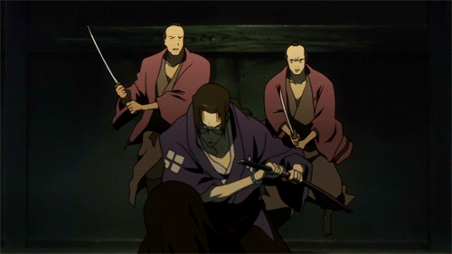

Mugen este unul dintre principalii protagoniști ai serialului.
Atât Mugen și Jin o însoțesc pe Fuu în căutarea samuraiului care miroase a floarea soarelui.
Mugen îi servește drept un suport pentru Jin în ceea ce privește personalitatea și dispoziția.
Stilul său de luptă este caracterizat ca fiind imprudent și neregulat.
Nepoliticos, vulgar, îngâmfat, temperamental și dezgustat - Mugen este un fel de anti-erou.
Îi place să lupte și are tendința de a alege lupte din motive meschine. În mai multe episoade este clar că Mugen este un afemeiat.
Mugen este extrem de competitiv și va înfrunta pe toți concurenții. Este predispus la jocuri de nororc și la lupte cu oricine
altcineva pecare îl consideră suficient de puternic.
Jin este unul dintre principalii protagoniști ai serialului. El este unul dinre cei doi bodyguari ai lui Fuu.
Este un fost student de kenjutsu. După ce și-a ucis propriul maestru în autoapărare, a fugit și în cele din urmă
s-a întâlnit cu Fuu și Mugen.
Spre deosebire de Fuu și Mugen, Jin este un tip calm și liniștit în cele mai îngrozitoare circumstanțe,
deoarece îi determină atât pe Fu, cât și pe Mugen să aibă încredere în el.
Cu toate acestea acestea comportamentul său stoic îi poate irita pe tovarășii săi, deoarece el
răspunde gândurilor lor cu oftări și mormăituri.
Prin propria sa recunoaștere, Jin și-a petrecut cea mai mare parte a timpului concetrându-se
pe îmbunătățirea abilităților sale și aproape deloc pe cultivarea prietenilor.
Această lipsă de companie înseamnă că prețuiește prietenia dintre Fuu și Mugen,
deoarece cu adevărat e întristat atunci când cei trei se despart.

Fuu este personajul femnin principal al serialului. În urma unei serii de circumstanțe, ea îi păcălește pe Mugen și Jin
să o însoțească în călătoria ei în călătoria ei în găsirea Samuraiului ce miroase a Floarea Soarelui.
Este foarte predispusă la accidente, pierderea și problemele, deși este destul de practică.
Adesea vrea să pară mai cunoscătoară de lume și mai experimentată decât este în realitate pentru a nu părea complet
idioată în fața lui Jin și Mugen.